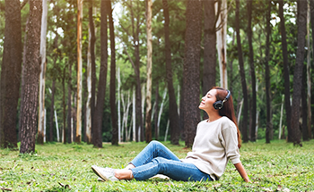
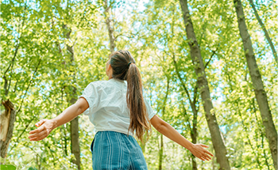

現代人はストレスを抱えやすいと言われています。
健康堂では「心身の健康」をコンセプトに､自然を感じながら日頃の疲れを癒していただけるよう様々な旅行プランをご用意しています。

明るく爽やかな森の中を歩く時間は、それだけで心と体を癒してくれます。
都会の喧騒を離れて、小川のせせらぎ、木々のざわめき、鳥の鳴き声… 自然の声に耳を傾けてみて下さい。
よりリラックスして、また満足感のある充実した時間を過ごすことができるでしょう。
自然に囲まれながら心身共に健やかになりませんか？